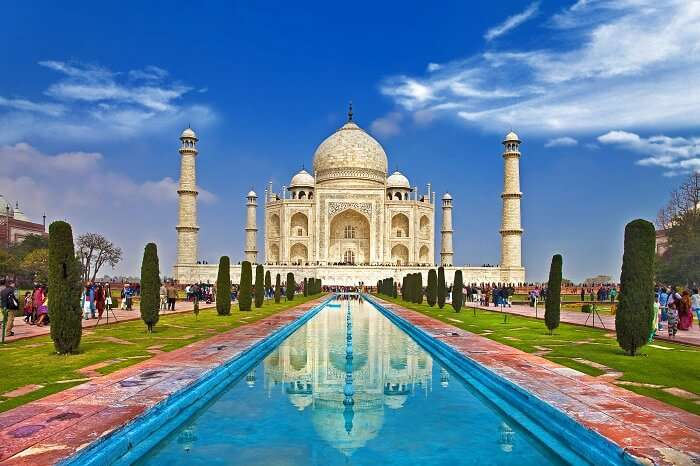

Seven Wonders Of India That You Should Visit In 2021

India boasts of diversity in topography, heritage, culture, language, and ethos. The country is known for its rich & inspiring historical tales and heroes. The historical monuments of India speak greatly of these historical tales and have also given us the Seven Wonders of India. Overall, India is a true kaleidoscope of magic and charm; a true wonderland too.
The Times Of India, in 2007, carried out an SMS poll to vote for the 7 wonders of India out of a list of 20 identified sites. The public voting through SMS generated a comprehensive list of the Seven Wonders of ancient India. Have a look!
Magnificent Seven Wonders Of India
All of us know of the Seven Wonders of the world, but are you aware of the Seven Wonders in India? Find below the list of Seven Wonders of India with photos.
Gomateshwara- Karnataka
Hampi- Karnataka
Harmandir Sahib Golden Temple- Punjab
Khajuraho- Madhya Pradesh
Konark Sun Temple- Odisha
Nalanda- Bihar
Taj Mahal- Uttar Pradesh
1. Gomateshwara – Karnataka
Gomateshwara is a monolithic statue, dedicated to God Baahubali of Jain religion. Located in Shravanabelagola in Karnataka, the massive art wonder was voted as one of the 7 wonders of India. The grand structure is one of the largest free-standing statues of the world and looks immensely peaceful & serene.
What’s special:The temple hosts the Mahamastakabhisheka festival that happens once in 12 years. During this celebration, the figurine is washed and polished with milk, saffron, and ghee to maintain the shimmer & luster of the rock.
Note: The Mahamastakabhisheka festival last took place in 2006. Subsequently, it will be held in 2018, 2024, and so on.
How to Reach By air: Mysore Airport is 94.5 km away.
By rail: Shravanabelagola has its own railhead and is well-connected with major cities like Bangalore, Mangalore, Mysore, Pune, and Coimbatore.
By road: The driving distance from Bangalore is 144 km via NH 75.
2. Hampi – Karnataka
ocated by the banks of the river Tungabhadra in Karnataka, Hampi is one of the most famous historical places in India. Hampi is known for its historical ruins and relics of the grand Vijaynagar Kingdom and the marvelous showcase of art has made it one of the Seven Wonders in India. The charming site is recognized as World Heritage Site by UNESCO and comprises of stunning architectural ruins of temples and monuments.
What’s special: Monkey Temple, Archeological Museum, Vijaya Vittala Temple, Royal Enclosure, Virupaksha Temple, Queen’s Bath, and Riverside Ruins
How to Reach By air: Hubli Airport is 167.3 km away.
By rail: Hospet railway station is located 13 km.
By road: The driving distance from Bangalore is 343 km via NH 48 and NH 50.
3. Harmandir Sahib Golden Temple – Punjab
Harmandir Sahib, more popularly known as the Golden Temple and Durbar Sahib, is the holiest shrine of Sikhism. Adorned inside and out with sections from the Holy Granth Sahib, it is one of the most popular religious places in India. The gold-plated structure showcases copper domes and sparkling white marble walls, reflecting Islamic-style floral patterns. Its serenity & the charm of the place, clean & hygienic ambiance, and spiritual solace have made it one of the extremely popular wonders in India.
What’s special: Guru ka Langar, Hari Mandir, Amrit Sarovar, and Central Sikh Museum
How to Reach By air: Sri Guru Ram Dass Jee International Airport (ATQ) is situated 11 km from the city-centre. There are daily flights from Indian as well as some international cities.
By rail: Amritsar Railway Station is well connected to other Indian cities.
By road: Buses are available from other cities in Punjab as well as from Delhi, Shimla, and Jammu.
4. Khajuraho – Madhya Pradesh
Khajuraho is one of the selected Seven Wonders in India, known for its cluster of marvelous Hindu & Jain temple structures and their jaw-dropping statuettes. The spectacular artwork and sculptures depicting supreme romance and eternal love is not only acclaimed in India but also worldwide.
What’s special: Kandariya Mahadev Temple, Devi Jagadambi Temple, Chausath Yogini Temple, Chitragupta Temple, Vishwanath Temple, Nandi Temple, Varaha Temple, and the Sound and Light Show depicting the reign of Chandela dynasty
How to Reach: Khajuraho has its own airport and railway station.
5. Konark Sun Temple – Odisha
Sun Temple, located at Konark in coastal Orissa, is a cluster of ancient temples with stunning artwork & sculptures. This stone beauty is one of the fabulous seven wonders in India, built in typical Kalinga style pattern by the King Narasimhadeva-I of the Ganga Dynasty.
What’s special: The three statues of Sun God where the sun rays fall on dawn,
noon, & dusk and the sundial with 12 wheels pulled by seven horses depict the time of the day
How to Reach By air: The Bhubaneswar Airport is situated 64 km away.
By rail: The nearest railhead is Puri, 31 km away.
By road: Buses of the Odisha State Public Transport are available from Puri, Bhubaneswar, and other cities.
6. Nalanda – Bihar
Nalanda, located near Patna, is one of the ancient education centers in India. This is one of the oldest universities in the world. It is believed that students from China, Tibet, Persia, and Greece traveled up to here to attain education and enhance learning skills. The excavated ruins of Nalanda have enticed history enthusiasts and travelers through the ages which led to its presence on the list of Seven Wonders of India. What’s special: Pavarika mango grove, Surya Mandir, Hiuen Tsang Memorial Hall, Nalanda Archaeological Museum, and The Great Stupa
How to Reach By air: Lok Nayak Jayaprakash International Airport in Patna is situated 97 km away.
By rail: Rajgir, located 12 km away, is the nearest railway connect.
By road: Nalanda is well connected by roads with Rajgir, Bodhgaya, Patna, Pawapuri, Bihar Sharif, and other cities.
7. Taj Mahal – Uttar Pradesh
Taj Mahal, the white marble mausoleum in Agra, was built by the Mughal emperor Shah Jahan to iconize his love for his wife Mumtaz Mahal. This marvelous masterpiece is regarded as one of the World Heritage Sites and showcases Islamic artwork. Taj Mahal is not only considered to be one of the 7 wonders of India, but it is also listed among the Seven Wonders of the Medieval World.
What’s special: The marvelous architecture and the grand entrances
How to Reach By air: Indira Gandhi International Airport in New Delhi, located 220 km away, is the nearest international airport. Agra’s Kheria Airport, located about 12.5 km from the heart of the city, is well-connected with Delhi, Varanasi, and Khajuraho.
By rail: Agra has five main railway stations – the Agra Cantonment, Raja-ki-Mandi, Agra Fort, Agra City, and Idgah Agra Junction. These stations are well-connected with Delhi, Mumbai, Kolkata, and other cities of India.
By road: Nalanda is well connected by roads with Rajgir, Bodhgaya, Patna, Pawapuri, Bihar Sharif, and other cities.